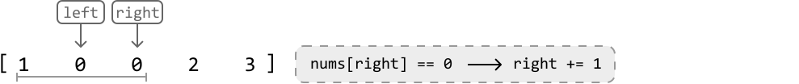

Shift Zeros to the End
MediumGiven an array of integers, modify the array in place to move all zeros to the end while maintaining the relative order of non-zero elements.
Example:
Input: nums = [0, 1, 0, 3, 2]
Output: [1, 3, 2, 0, 0]
Intuition
This problem has three main requirements:
- Move all zeros to the end of the array.
- Maintain the relative order of the non-zero elements.
- Perform the modification in place.
A naive approach to this problem is to build the output using a separate array (temp). We can add all non-zero elements from the left of nums to this temporary array and leave the rest of it as zeros. Then, we just set the input array equal to temp.
By identifying and moving the non-zero elements from the left side of the array first, we ensure their order is preserved when we add them to the output:
def shift_zeros_to_the_end_naive(nums: List[int]) -> None:
temp = [0] * len(nums)
i = 0
# Add all non-zero elements to the left of 'temp'.
for num in nums:
if num != 0:
temp[i] = num
i += 1
# Set 'nums' to 'temp'.
for j in range(len(nums)):
nums[j] = temp[j]
export function shift_zeros_to_the_end_naive(nums) {
const temp = new Array(nums.length).fill(0)
let i = 0
// Add all non-zero elements to the left of 'temp'.
for (const num of nums) {
if (num !== 0) {
temp[i] = num
i += 1
}
}
// Set 'nums' to 'temp'.
for (let j = 0; j < nums.length; j++) {
nums[j] = temp[j]
}
}
import java.util.ArrayList;
class UserCode {
public static void shiftZerosToTheEndNaive(ArrayList nums) {
ArrayList temp = new ArrayList<>();
// Add all non-zero elements to the left of 'temp'.
for (int num : nums) {
if (num != 0) {
temp.add(num);
}
}
// Fill the rest of 'temp' with zeros.
while (temp.size() < nums.size()) {
temp.add(0);
}
// Set 'nums' to 'temp'.
for (int i = 0; i < nums.size(); i++) {
nums.set(i, temp.get(i));
}
}
}
Unfortunately, this solution breaks the third requirement of modifying the input array in place.
However, there's still valuable insight to be gained from this approach. In particular, notice that this solution focuses on the non-zero elements instead of zeros. This means if we change our goal to move all non-zero elements to the left of the array, the zeros will consequently end up on the right. Therefore, we only need to focus on non-zero elements:
![The image represents a data transformation process. It shows an input array `[0 1 0 2 3]` enclosed in square brackets. A light-blue rectangular box highlights the non-zero elements (1, 2, and 3) within this array. A solid black arrow points from the input array to an output array `[1 2 3 0 0]`. Below the input array, the text 'non-zero numbers go here' in light-blue indicates that the transformation involves extracting only the non-zero numbers. Light-blue horizontal lines are drawn under both the input and output arrays, visually connecting the non-zero elements in the input to their corresponding positions in the output, implying a direct mapping of non-zero values. The zeros in the input array are preserved in the output array, maintaining the original array's length.](images/01_05_shift-zeros-to-the-end-img-d64c9abc.svg)
If there was a way to iterate over the above range of the array where the non-zero elements go, we could iteratively place each non-zero element in that range.
Two pointers
We can use two pointers for this:
- A left pointer to iterate over the left of the array where the non-zero elements should be placed.
- A right pointer to find non-zero elements.
Consider the example below. Start by placing the left and right pointers at the start of the array. Before we move non-zero elements to the left, we need the right pointer to be pointing at a non-zero element. So, we ignore the zero at the first element and increment right:
![Image represents a visualization of a coding pattern, likely illustrating pointer manipulation within an array. The top section shows two gray boxes labeled 'left' and 'right' pointing downwards to an array `[0 1 0 2 3]`. This represents the initial state of the array and the pointers. Below, a second similar arrangement shows the array after a step in the algorithm. The 'left' pointer remains unchanged, but the 'right' pointer (shown in orange) has moved one position to the right. A dashed gray box in the middle displays a conditional statement: `nums[right] == 0 → right += 1`, indicating that if the element at the index pointed to by 'right' is equal to 0, then the value of 'right' is incremented. The dashed line connecting the 'right' pointer in the second array to the conditional statement visually connects the conditional check to the pointer's movement. The overall diagram illustrates a single iteration of an algorithm that likely involves traversing and manipulating an array using two pointers.](images/01_05_shift-zeros-to-the-end-img-5455a7cb.svg)
Remember, we only use the left pointer to keep track of where non-zero elements should be placed. So, until we find a non-zero element, we shouldn’t move this pointer.
Now, the value at the right pointer is non-zero. Let’s discuss how to handle this case.
1. Swap the elements at left and right: First, we’d like to move the element at the right pointer to the left of the array. So, we swap it with the element at the left pointer.
![Image represents a visual depiction of a sorting algorithm's step. Two rectangular boxes labeled 'left' and 'right' are positioned above a horizontal array `[0 1 0 2 3]`. Arrows descend from 'left' and 'right' pointing to the array elements at indices 0 and 1 respectively. A dashed-line rectangle to the right contains the conditional statement 'nums[right] != 0 → swap(nums[left], nums[right])', indicating that if the element at the index pointed to by 'right' (which is 1 in this case) is not equal to 0, then a swap operation occurs between the elements at the indices pointed to by 'left' and 'right'. The 'nums' refers to the array, and 'left' and 'right' act as index pointers. The arrow '→' signifies the conditional execution of the swap function.](images/01_05_shift-zeros-to-the-end-img-63c2f405.svg)
![Image represents a visual depiction of a swap operation within a sorting algorithm, likely a variation of quicksort or similar. At the top, two rectangular boxes labeled 'left' and 'right' are shown, each with a downward-pointing arrow. These arrows point to a numerical array represented as `[1 0 2 3]`, where the numbers 1 and 0 are highlighted in light peach circles. A gray horizontal line connects the numbers 1 and 0, indicating their positions within the array. A curved orange arrow, labeled 'swapped,' arcs underneath the line, connecting the circled 1 and 0, illustrating the exchange of these two elements. The overall diagram demonstrates a single swap step in a sorting process, where the values pointed to by 'left' and 'right' pointers are interchanged.](images/01_05_shift-zeros-to-the-end-img-849b1a19.svg)
2. Increment the pointers:
- After the swap is complete, we should increment the left pointer to position it where the next non-zero element should go.
- Let’s also increment the right pointer in search of the next non-zero element.
![The image represents a simple illustration of a coding pattern, possibly related to array manipulation or pointer movement. Two rectangular boxes labeled 'left' and 'right' are positioned above a horizontal line segment. Downward arrows connect each box to a number below the line. The numbers below the line are arranged as an array-like structure: `[1 0 0 2 3]`. A dashed-line rectangle to the right contains the text 'left += 1, right += 1', indicating an operation where the values associated with 'left' and 'right' are incremented by 1. The arrows suggest that the 'left' and 'right' variables might represent indices or pointers into the array, and the operation in the dashed box describes how these indices are updated. The overall diagram visually depicts a step in an algorithm that involves iterating or manipulating an array using two pointers.](images/01_05_shift-zeros-to-the-end-img-cc8d5098.svg)
![Image represents a diagram illustrating a coding pattern, possibly related to array traversal or pointer manipulation. Two rectangular boxes labeled 'left' (in orange) and 'right' (in gray) are positioned at the top. A solid downward-pointing arrow extends from each box, indicating data flow. These arrows point to the numbers 0 and 0 respectively, which are situated below on a horizontal gray line representing an array or sequence. The number 1 is placed to the left of the 0 from the 'left' box, and the number 2 and 3 are placed to the right of the 0 from the 'right' box, all on the same horizontal line, enclosed within square brackets `[ ]` to denote an array structure. A dashed orange arrow connects the 'left' box's output (0) to the number 1, suggesting a possible indirect or conditional relationship or data flow. The overall arrangement suggests a process where the 'left' and 'right' elements might represent pointers or indices that traverse the array, potentially converging or interacting at a central point (the 0s).](images/01_05_shift-zeros-to-the-end-img-ae59e1ed.svg)
We can apply this logic to the rest of the array, incrementing the right pointer at each step to find the next non-zero element:

right += 1`. This indicates that if the element at the index `right` in the `nums` array is equal to 0, then the value of `right` is incremented by 1. The diagram visually shows the variables `left` and `right` potentially used as pointers or indices within the array, and the conditional statement describes a step in an algorithm that modifies the `right` pointer based on the value of the array element it points to."/>![Image represents a simplified illustration of a data structure, possibly an array, being manipulated. Two rectangular boxes, labeled 'left' (in gray) and 'right' (in orange), represent pointers or indices. A gray horizontal line depicts an array containing the elements [1, 0, 0, 2, 3]. A solid downward-pointing arrow from 'left' points to the element '0' at index 1, indicating that the 'left' pointer is currently at this position. An orange downward-pointing arrow from 'right' points to the element '2' at index 3, showing the 'right' pointer's position. A dashed orange curved arrow connects the 'right' pointer to the element '0' at index 2, suggesting a potential movement or operation involving this element. The overall arrangement visualizes the pointers' positions within the array and hints at a possible algorithm or process involving these pointers, perhaps related to partitioning or searching within the data structure.](images/01_05_shift-zeros-to-the-end-img-888e4a09.svg)
![Image represents a visual depiction of a step in a sorting algorithm, likely a comparison-based sort. Two rectangular boxes labeled 'left' and 'right' are positioned above a horizontal array `[1, 0, 0, 2, 3]`. Arrows descend from 'left' and 'right' pointing to the array elements at indices 1 and 4 respectively (0 and 2). A dashed-line rectangle to the right displays the condition `nums[right] != 0` followed by a right arrow and the action `swap(nums[left], nums[right])`. This indicates that if the element at the index pointed to by 'right' (which is 2) is not equal to 0, then the elements at the indices pointed to by 'left' and 'right' (0 and 2) will be swapped. The diagram illustrates a single comparison and potential swap operation within a larger sorting process.](images/01_05_shift-zeros-to-the-end-img-59e150fb.svg)
![Image represents a visual depiction of a swapping operation within an array. The diagram shows an array `[1, 2, 0, 3]` with two pointers, labeled 'left' and 'right,' initially pointing to the elements 2 and 0 respectively. Arrows from rectangular boxes labeled 'left' and 'right' indicate the pointers' positions. A gray horizontal line connects the elements 1, 2, 0, and 3, representing the array. A curved orange arrow labeled 'swapped' shows the exchange of the values at the 'left' and 'right' pointer positions. To the right, a light gray, dashed-bordered rectangle contains the operation `left += 1, right += 1`, indicating that after the swap, both pointers will increment their positions by one in the next iteration. The overall image illustrates a single step in a sorting algorithm, likely involving a swap and pointer movement.](images/01_05_shift-zeros-to-the-end-img-65969435.svg)
![Image represents a diagram illustrating a simple coding pattern, possibly related to array manipulation or pointer movement. The diagram shows a numerical array `[1 2 0 0 3]` represented horizontally. Above the array, two rectangular boxes labeled 'left' and 'right' in orange are positioned. A solid orange arrow descends from 'left' pointing to the element '0' in the second position from the left within the array. Similarly, a solid orange arrow descends from 'right' pointing to the element '3' at the right end of the array. Dashed orange lines curve from 'left' to the element '2' and from 'right' to the element '0' in the third position, suggesting a potential search or traversal pattern. The overall arrangement suggests a process where two pointers, one starting from the left and the other from the right, might be moving towards the center of the array, potentially for comparison, searching, or merging operations.](images/01_05_shift-zeros-to-the-end-img-74ec8480.svg)
![Image represents a visual depiction of a step in a sorting algorithm, likely a part of a larger process. Two rectangular boxes labeled 'left' and 'right' are positioned above a numerical array `[1, 2, 0, 0, 3]`. Arrows descend from 'left' and 'right' pointing to the '0' elements within the array, indicating these are the current indices being considered. A dashed-line rectangle to the right shows a conditional statement: `nums[right] != 0 → swap(nums[left], nums[right])`. This indicates that if the element at the index 'right' is not equal to 0, then a `swap` function is called to exchange the values at the 'left' and 'right' indices within the `nums` array. The arrow represents the flow of control based on the condition.](images/01_05_shift-zeros-to-the-end-img-00a0f533.svg)
![Image represents a visual depiction of a swapping operation within an array. The diagram shows an array `[1, 2, 3, 0]` with two pointers, 'left' and 'right', initially pointing to the elements 3 and 0 respectively. Rectangular boxes labeled 'left' and 'right' above indicate the pointers' origins. A downward-pointing arrow from each box connects to its corresponding element in the array. The elements 3 and 0 are highlighted in light peach. A gray horizontal line connects the elements 1 and 2, visually representing the array's structure. A curved orange arrow labeled 'swapped' connects the highlighted elements 3 and 0, indicating that these elements have been exchanged. To the right, a light gray, dashed-bordered rectangle displays the operation performed: `→ left += 1, right += 1`, signifying that after the swap, both pointers will increment their positions by one.](images/01_05_shift-zeros-to-the-end-img-d7c5b18c.svg)
![Image represents a diagram illustrating a coding pattern, possibly related to array manipulation or pointer movement. The diagram shows a light-blue rectangular array `[1 2 3]` with a light-blue underline indicating its boundaries. Two orange rectangular boxes labeled 'left' and 'right' are positioned above the array. Dashed orange arrows point downwards from 'left' and 'right' to the array elements. The 'left' arrow points to the first element (1) and the 'right' arrow points to the last element (3). The arrows suggest that the 'left' and 'right' variables might represent pointers or indices that can be manipulated to traverse the array. The empty space `∅` between the array and the pointers suggests an initial state or a potential intermediate step in an algorithm. The overall structure suggests a two-pointer approach commonly used in algorithms like merging or partitioning.](images/01_05_shift-zeros-to-the-end-img-8c2cef79.svg)
Once all swapping is done, all zeros will end up at the right end of the array as intended, without disturbing the order of the non-zero elements. The two-pointer strategy used in this problem is unidirectional traversal.
[Interactive code editor — visit bytebytego.com to run]
Implementation
You might have noticed that we always move the right pointer forward, regardless of whether it points to a zero or a non-zero. This allows us to use a for-loop to iterate the right pointer.
def shift_zeros_to_the_end(nums: List[int]) -> None:
# The 'left' pointer is used to position non-zero elements.
left = 0
# Iterate through the array using a 'right' pointer to locate non-zero
# elements.
for right in range(len(nums)):
if nums[right] != 0:
if right != left:
nums[left], nums[right] = nums[right], nums[left]
# Increment 'left' since it now points to a position already occupied
# by a non-zero element.
left += 1
export function shift_zeros_to_the_end(nums) {
// The 'left' pointer is used to position non-zero elements.
let left = 0
// Iterate through the array using a 'right' pointer to locate non-zero
// elements.
for (let right = 0; right < nums.length; right++) {
if (nums[right] !== 0) {
if (right !== left) {
// Swap elements at left and right positions
;[nums[left], nums[right]] = [nums[right], nums[left]]
}
// Increment 'left' since it now points to a position already occupied
// by a non-zero element.
left += 1
}
}
}
import java.util.ArrayList;
class UserCode {
public static void shiftZerosToTheEnd(ArrayList nums) {
// The 'left' pointer is used to position non-zero elements.
int left = 0;
// Iterate through the array using a 'right' pointer to locate non-zero
// elements.
for (int right = 0; right < nums.size(); right++) {
if (nums.get(right) != 0) {
if (right != left) {
// Swap nums[left] and nums[right].
int temp = nums.get(left);
nums.set(left, nums.get(right));
nums.set(right, temp);
}
// Increment 'left' since it now points to a position already occupied
// by a non-zero element.
left++;
}
}
}
}
Complexity Analysis
Time complexity: The time complexity of shift_zeros_to_the_end is O(n), where n denotes the length of the array. This is because we iterate through the input array once.
Space complexity: The space complexity is O(1) because shifting is done in place.
Test Cases
In addition to the examples discussed, below are more examples to consider when testing your code.
| Input | Expected output | Description |
|---|---|---|
nums = [] | [] | Tests an empty array. |
nums = [0] | [0] | Tests an array with one 0. |
nums = [1] | [1] | Tests an array with one 1. |
nums = [0, 0, 0] | [0, 0, 0] | Tests an array with all 0s. |
nums = [1, 3, 2] | [1, 3, 2] | Tests an array with all non-zeros. |
nums = [1, 1, 1, 0, 0] | [1, 1, 1, 0, 0] | Tests an array with all zeros already at the end. |
nums = [0, 0, 1, 1, 1] | [1, 1, 1, 0, 0] | Tests an array with all zeros at the start. |